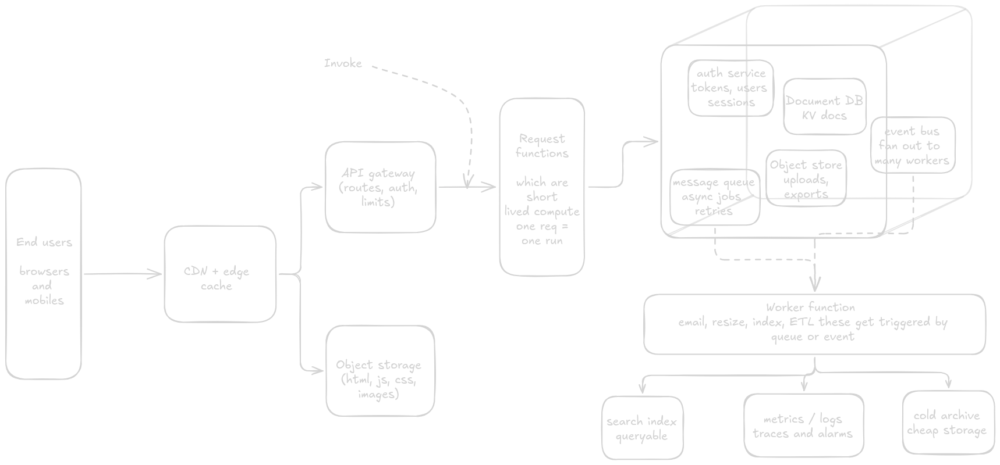
Serverless is actually a fairly abstract idea so its not like there's one singular technique that every serverless framework/tool uses. The core breakdown is just developers don't have to think about servers they just write code and it magically runs and you pay for what you use.
There are lot of different ways that can be achieved that are quite different from one another. The most common type is the "Function as a Service" also known as FaaS model --- AWS Lambda or Azure Functions are two example. In a normal server that you host yourself there are two distinct steps in the process. First you set up a server, or a VM, or a container, or a Kubernetes cluster, or whatever, and get your code up and running Then, when a user goes to your site, your service can respond to their requests. Now imagine if you could spin up a new container fast enough that you could wait for a user request, create a new container, respond to the request, and destroy the container. That's essentially how FaaS works. You push your code to AWS Lambda, set up a few other services (for example, API Gateway to create the actual API url and configure it to call your Lambda function when it gets a request), and then you let Amazon's engineers take care of actually running your code and scaling up and down in response to traffic. And then you get charged a fraction of a cent per request.
For now this is a very high level / bird eye overview of whatever we are going to discuss further ...
Foundation
The reason why serverless is usually called "serverless functions" is because that's the easiest and most explicit way to think of them. Your code is just the application layer. You ignore everything about routing, receiving requests, sending responses and just write a function that takes arguments and returns a result. The serverless system will handle all of the wiring for you. How exactly you write your code will depend on the service you use.
Serverless can do almost everything that a normal server can do. So it can talk to a database and almost anything else that you'd expect. The only thing it cannot do is hold a persistent TCP/UDP socket open although providers like AWS have found ways to do Serverless WebSockets (TCP-like sockets) which is pretty neat. But that part I would like to discuss later on maybe on some other blog :D
A request
https://api.example.com/hello?name=mrinalIf we make a request at this url it points at API gateway which checks the route, the method and sometimes an auth rule. If the route says this goes to the hello function,” Gateway sends the request into an event and asks Lambda to run your function once for that event
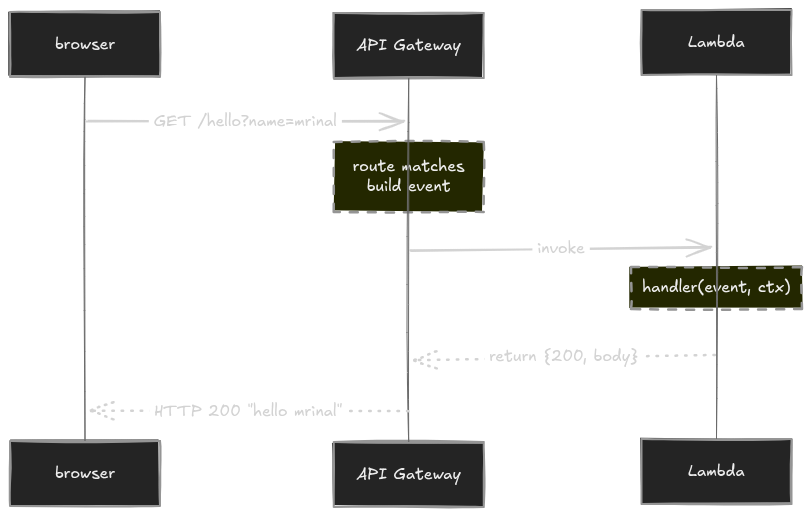
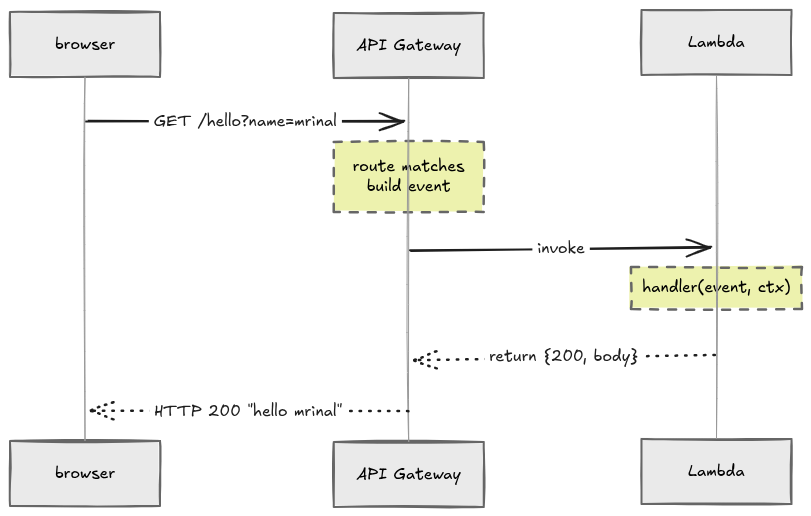
If a warm execution environment from a recent call is still around then Lambda reuses it if not it starts one by pulling your deployment packages, starting the runtime and only then calls your code. Your function runs and returns a small response object then gateway turns that object back into a normal HTTP response and sends it to the browser. You never accept a socket or write a listen loop.
so whenever your are working heavy with serverless you are going to counter a lot many terms but for now I want to discuss a few here like A trigger is the one allowed to start your function and here the trigger is API Gateway, a S3 upload, a queue message or a cron schedule can also be a trigger. It doesn't runs the code your sent but asks the platform to run the code. An event is the data the trigger hands over for an HTTP call and that is the method, path, headers, query strings and body already parsed into a struct. Our function will be reading this value instead of a socket. An invocation is one run of the function for one event and the bill which you pay for your serverless instance is mostly invocations plus how long each one ran so a thousand calls are a thousand invocations even if each did almost nothing. The handler is your function and the platform calls it and for the last there comes context object it stays along with the event and it tells you how much time you have left before the platform kills the invocation, the request id and who invoked you and it comes from the runtime.
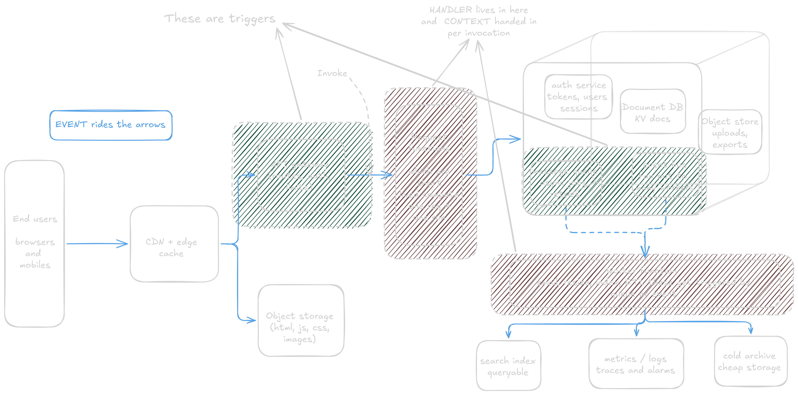
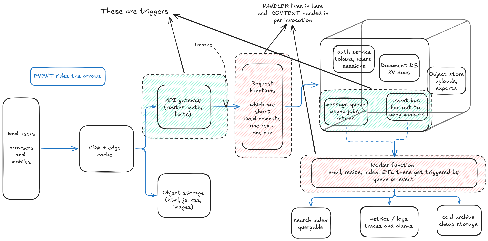
a Lambda handler in Golang for an API Gateway proxy integration
package main
import (
"context"
"github.com/aws/aws-lambda-go/events"
"github.com/aws/aws-lambda-go/lambda"
)
// handler is the function Lambda will call. It does not listen on a port.
func handler(ctx context.Context, req events.APIGatewayProxyRequest) (events.APIGatewayProxyResponse, error) {
name := req.QueryStringParameters["name"] // event: query string already parsed for you
if name == "" {
name = "stranger"
}
return events.APIGatewayProxyResponse{
StatusCode: 200,
Body: "hello " + name,
}, nil
}
func main() {
lambda.Start(handler) // register handler, then block until the runtime invokes it
}few things to notice here that req.QueryStringParameters["name"] reads the event and there is no http.Request,body parser or router because gateway already did that work also the returned APIGatewayProxyResponse is the contract back to gateway with status code and body are the fields that matter here. Returning nil means the invocation succeeded if we had returned an error Lambda maks the invocation as failed and gateway would typically turn that into a 502 because our function never produced a response object.
you might get a question that how exactly does the platform handle your code the moment a request arrives ?? as there is nothing like a listening loop which would be listening to our incoming requests ... How ??
Lifecycle
This all starts when a serverless function is invoked for the first time or it has been invoked after a period of inactivity, it goes down a serial number processes also known as initialization process which is generally common for every platform which provides FaaS, the whole intialization process includes downloading the code files from internal cloud buckets(like s3), setting up the environment variables and allocating memory and lastly starting the execution environment and this is called Cold start but this process can take some time which really depends on various factos such as the size of deployment package, and the language's execution model (e.g, compiled versus interpreted) after all this process is completed the default constructor of class "function" is called which is then completed by the execution of the function handler code.
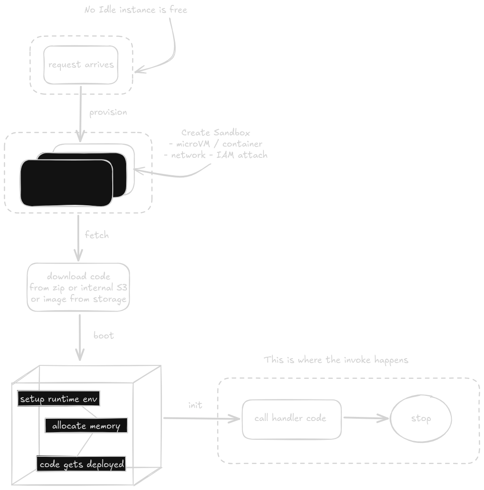
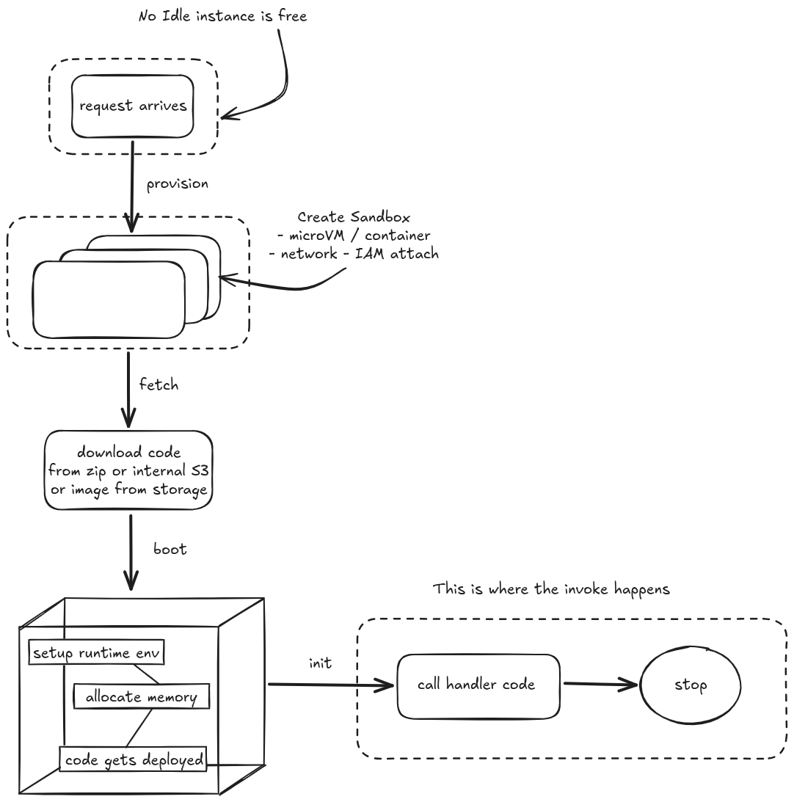
As a general rule, C# and Java have historically suffered from longer cold starts than Javascript or Python. The numbers have changed over time and continue to change, but the last article I read indicated average cold start for Python and Node in the 200-400ms range while Java and C# were in the 500-700ms range. It's worth mentioning, once the lambda has been started, it will remain "warm" for some period of time. Unfortunately, this number has also changed over time and appears to also depend on the memory allocation of the lambda. Based on what I read most recently, the time a lambda remains warm (runs without a cold start delay) ranged from 7 minutes up to 45 minutes, depending on the memory allocation you elected.
How impactful are cold starts? That is hard to answer. It really depends on your use case. If you use a lambda to run some background process and your SLA is "as long as it happens in a few minutes/hours", it won't really matter at all. If you use a lambda to sit behind API Gateway and serve a payload that is mission critical with an SLA of < 100ms 99% of the time, it may be the difference between lambda even being considered or not. I think those are the most extreme ends of the SLA continuum. Typically people who make a big deal out of cold starts are on the < 100MS P99 side of things
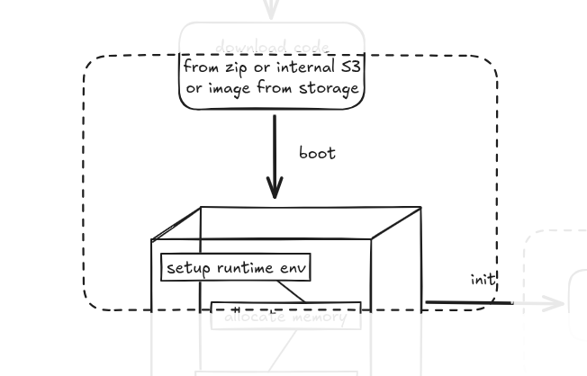
Because the function is not constantly running the container may need to boot upon the 1sth invocation and hence the time to serve the first request might unnecessarily very high.
However after a cold start, serverless function pauses the runtime context for an unpredictable interval which maintians the underlying container state in memory. If within the same time duration the serverless function is invoked again then the platform (like AWS) will use the same execution environment. This time default constructor will not get called instead handler code will get called and this is known as Warm Start
The expensive way, called Provisioned Concurrency, is basically paying IaaS (Infrastructure as a Service) platforms to keep a serverless function container warm (so as never to cold boot). The downside to this, it's more expensive than standard lambdas and you pay for it in GB-second enabled vs GB-second _running_ AKA being billed for potentially idle capacity. As one of the core value propositions of lambda is only paying for the compute you use, this makes the value of provisioned lambdas much less compelling. As lambda is already priced at a premium relative to other compute, paying for unused capacity in provisioned concurrency may materially change your calculations in favor of other compute like EC2 or Fargate. Lambda might still make sense, but as price increases, it's worth comparing it to other options.
Notice how I keep saying "container". Lambda is technically a container image on AWS. That container being warm means it's sitting in memory on a server or group of servers. The trouble is, as you scale out, you may need to invoke more instances of that lambda on new servers which need to load your container into their respective memory. That act of loading the container into memory is the "cold start". If you have a really bursty workload that goes from 1000 to 0 back to 1000 beyond that 15 minute cold start window, you will run into issues of servers evicting the images due to inactivity only needing to reload them to scale up for the next burst.
so we get to see that IaaS platforms freely spinning up, freezing and terminating containers to manage scale so you can no longer treat the server as a constant environment so for this we move forward to ...
Stateful and Stateless
What do we mean by state here ?? A state of an application is its condition or quality of being at a specific moment in time. Here stateful and stateless serverless applications differ in how they handle data and context between requests or function invocations. A stateless service is a service that does not store any data on the application server. It reads or writes data to the database returns a value (subjective/optional) and after that any information on the task itself is forgotten as long as the input is the same the output will always be the same we(delusionally calling myself an engineer) call these as pure functions
A stateful service is used to perform transactions, that is a series of tasks that depend on the result of preceding tasks. The easiest example is sending an order at a web store, where you gather your products in a shopping cart, and when you check out, you enter your account data on one page, store it, then enter your billing address, store it, then confirm your order and conclude the transaction. Each step depends on the successful outcome of the preceding step, and data needs to be preserved until the last one of these steps is completed or the transaction is canceled, in which case there has to be a rollback to restore your account balance to the way it was before you checked out.
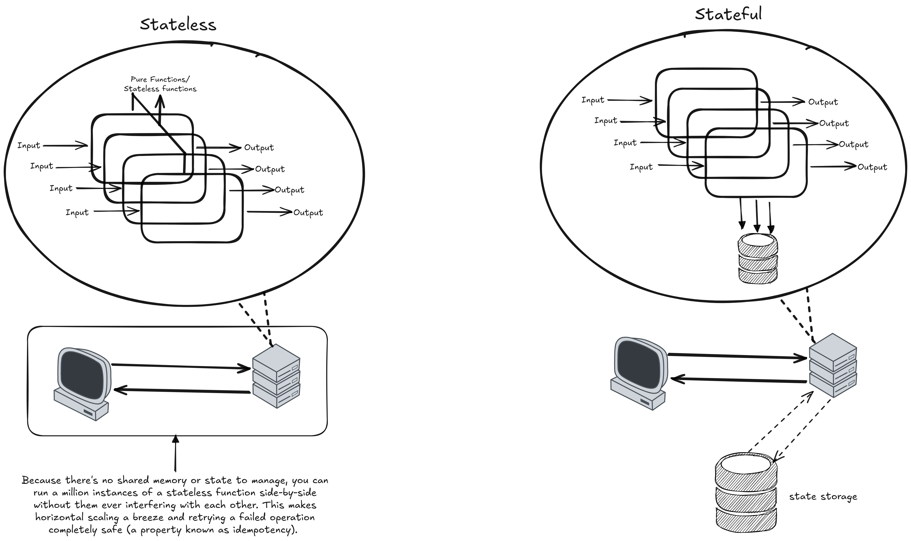
you might have get a questions that how do containers even handle the application state ?? the containers apparently handle the applicates states by unbundling the application code from its data which it got from the object storage or zip or image. The majority of applications we use day to day are stateful, but as technology advances, microservices and containers make it easier to build and deploy applications in the cloud. But if you see the sources containers were built to be stateless as it suited their flexible nature. Meanwhile containers have come into more widespread use, people began containerizing (redesigning and repackaging for the purposes of running from containers) existing stateful apps. This gave them the flexibility and speed of using containers, but with the storage and context of statefulness. Because of this, stateful applications can look a lot like stateless ones and vice versa. For example, you might have an app that is stateless, requiring no long-term storage, but that allows the server to track requests originating from the same client by using cookies.
Events driven architectures
What are events you may ask so the simple answer would be events are immutable facts, things that have happened that cannot be undone or changed these happen all the time everywhere. The time you played that song, took the bin out, ordered something online, cooked food, at most situations events are happening. With our context an event triggering a serverless function could be almost anything, from REST API HTTP request with Amazon API Gateway, a schedule task managed by an Amazon EventBridge rule, or an Amazon S3 notification like object uploaded into bucket.
Now comes what is event driven architecture ?? its just a collection of pattern you may have messaging patterns and also integration patterns inside your architecture depending on what you need. Event driven architecture is then divided into two parts one in which it communicates through events and communicates asynchronously.
When event driven architecture communicates through events then services will broadcast events that will be consumed by and reacted upon by other services so this requires two types of parties one which produces the events which publish events describing something that happened within the service for example a user was created, an order was delivered or a login successfully happened and then comes the other party which consumes the events in which these events subscribes to published events and react to them like updating local state, incrementing aggregates and triggering workflows. These are alson known as Sync invocations
Now when service A has to depend on synchronous responses from Service B to repond than it can charge up your bills and also reduce your overall performance of the application here you need event driven architecture which communicates asynchronously which happens to solve the above problem where services communicate but there is no expectation of an immediate response. The services can process the communication on its own time and schedule and these are known as Async invocations
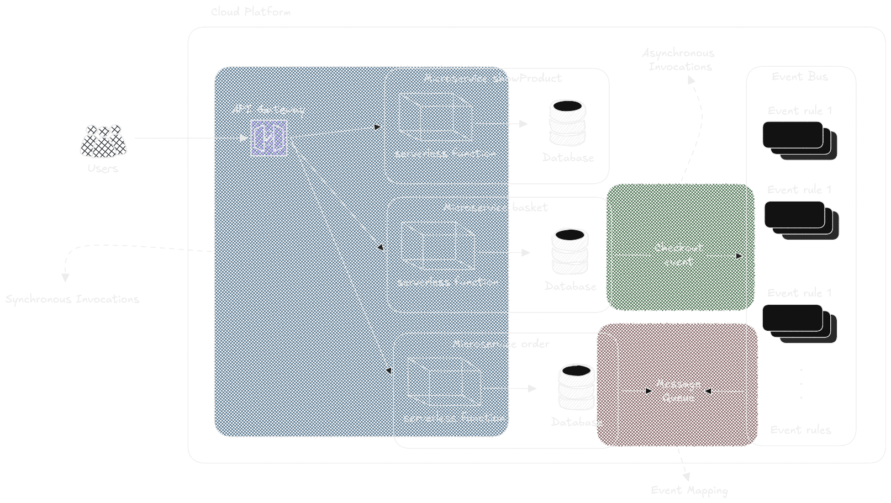
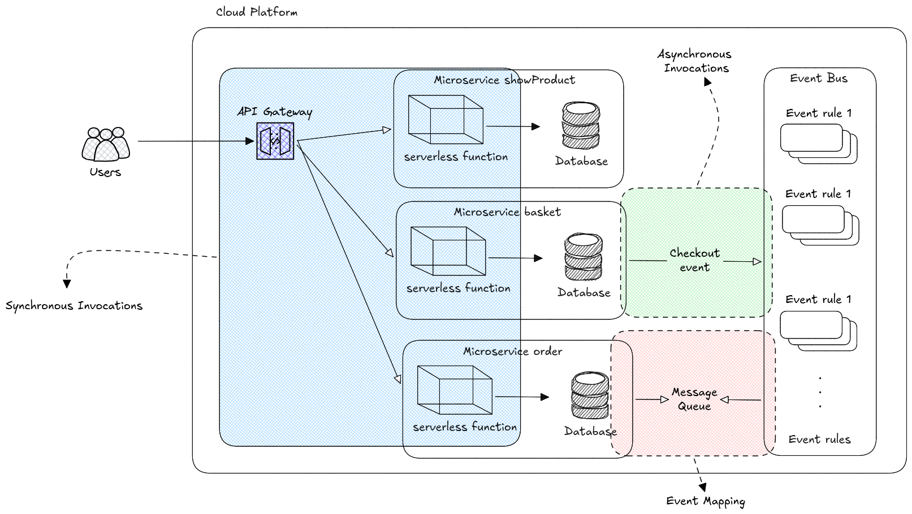
one more thing about event driven architecture is its idk nature just kidding its best part is the producers and consumers both are completely decoupled a producer shouldn't know or care who is consuming its events and how the consumers use those events in their service
SQS, SNS and Event Bridge
SQS is a queueing based service by Amazon (Simple Queue Service), queue here means that messages are put into a queue and consumers consume the message to process them and these messages are acknowledged as they are consumed and deleted after they are processed. One of SQS use cases is as a buffer which controls the application's throughput. Instead of forcing your Lambdas function to handle a massive spike in traffic all at once, SQS holds the messages in a queue and you can then limit the Lambda's concurrency so it processes the backlog at a steady and manageable pace.
SNS is a pub sub messaging service by Amazon (Simple Notification Service), publish/subscribe channels allows use to publish messages to many consumers that are interested in that message here producers publish and consumers subscribe
pub/sub is one solution to the async communication problem. first lets look at a special form of pub/sub Say you want to invite a friend to diner. You have 2 options. Synchronous communication Wait for her outside to hand over the invite. But what if she doesn't show up. You've wasted a day. Or you could give her a phone call, but what if she forgot her phone? So synchronous communication requires both parties to at least share the same time coordinate and you have to share private information like the address. Asynchronous communication now, you introduce a mailbox (something that represents you, digitally or the physically doesn't matter) and suddenly things get decoupled. You are no longer required to share the same location in time and space. Everyone uses the mailbox on their own schedule. People also don't have to give away personal information if they don't want to. However there's a new problem, how do you know if your friend checked her mail box? You could send a message back to the sender of the message, but this is only reversing the problem. How does she know that you have received her message and so on. So, while sync communication offers less flexibility, it gives you some guarantee that the person has received the message (opening the door, answering the phone) and that the person is who you think she is (voice, looks). Async means more flexibility but it also makes things more complex. Pub/sub adds another layer of anonymity and 1:1 becomes N:N Subscribers can receive messages (services) from multiple publishers , publishers can distribute messages to many subscribers. Think newsletters. Downside: message content allows only for generic information (a governmental earthquake warning, ads... ). Message formats once agreed on are difficult to change.
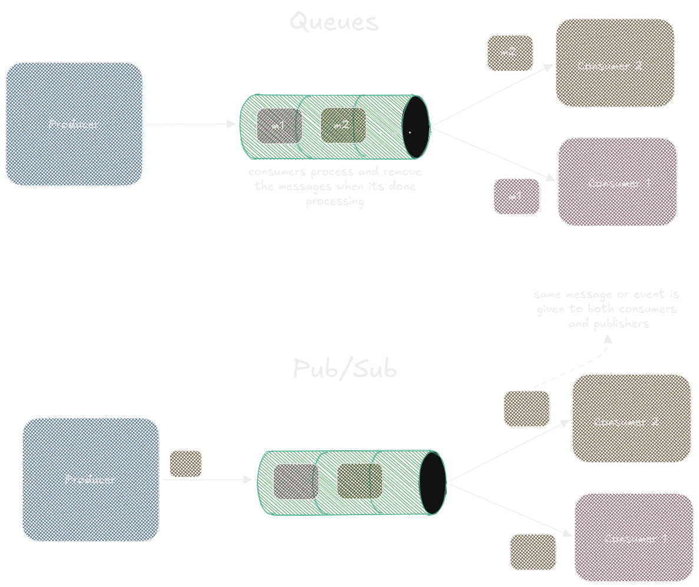
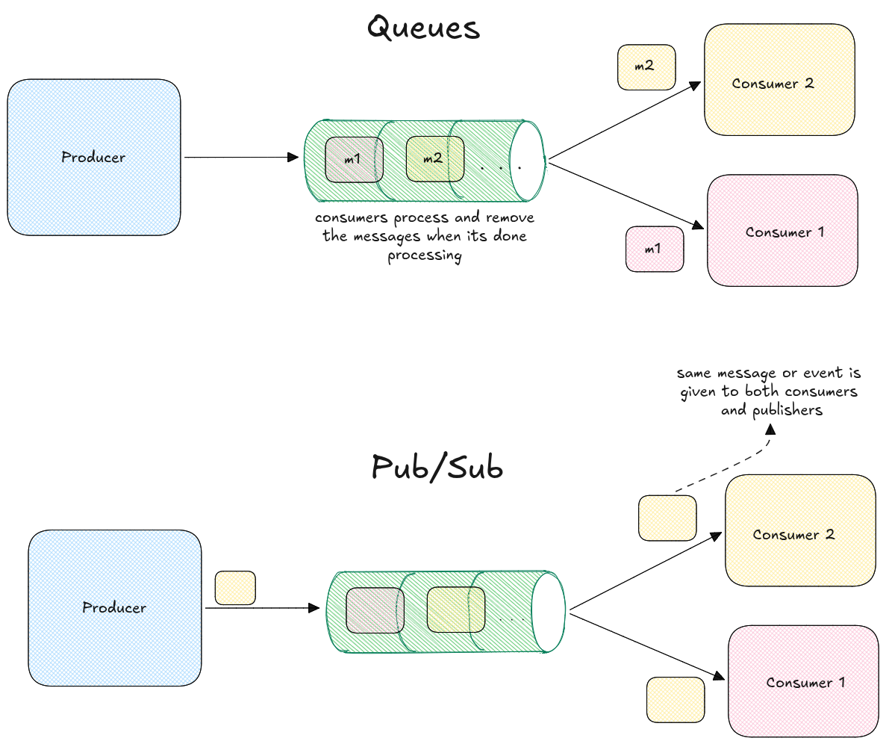
Eventbridge falls on the event driven side of things. So in a pub sub model you have a consumer that runs constantly listening to a specific queue and take action when new messages come in. Event driven on the other hand tends to be far more flexible. You send events into the event bus and in the eventbridge paradigm you are able to run specific tasks based on the event and data. So there's nothing that runs specifically listening to eventbridge typically. When a matching event comes in, eventbridge itself takes whatever action you configure. For example, say you want to run a specific lambda function when a new csv file gets uploaded to a bucket. In the eventbridge paradigm you would configure a rule that triggers that lambda when a new .csv file gets uploaded. The lambda doesn't constantly run and poll the eventbridge. In the same scenario, say you also want to invoke a different lambda if a .pdf file gets placed into the same bucket, you would simply create a new eventbridge rule that for that same bucket but filter on put object events where the file has a .pdf function. In contrast to perform a similar flow but in a pub sub paradigm you would have to likely perform some sort of queue fan out based on file type and have one subscriber listening to the csv queue and another subscriber listening to the pdf queue and those subscribers would poll their respective queues on some sort of interval versus being invoked only when a matching event occurs.
Rabbit holes | my currated reading list
Firecracker (NSDI ’20) + Lambda context
Firecracker paper (official)
Direct PDF:
https://www.usenix.org/system/files/nsdi20-paper-agache.pdf
Original Lambda PR/FAQ (the internal doc that launched the service, shared by Werner Vogels on the 10-year anniversary)
Peeking Behind the Curtains of Serverless Platforms
(USENIX ATC ’18) — the classic early measurement study of Lambda,
Azure Functions, and Cloud Functions
PDF:
https://www.usenix.org/system/files/conference/atc18/atc18-wang-liang.pdf
Cloudflare Isolates / Workers
How Workers works
(official docs, best overview of the isolate model)
Mitigating Spectre and Other Security Threats: The Cloudflare Workers Security Model
Introducing Workers Unbound (explicitly discusses V8 isolates vs containers)
Isolates are the Future of Cloud Computing (Zack Bloom’s classic post)
Safe in the sandbox: security hardening for Cloudflare Workers (more recent defense-in-depth work)
Serverless cold-start research
SOCK: Rapid Task Provisioning with Serverless-Optimized
Containers
(USENIX ATC ’18) — foundational paper on Zygote-style container
optimization
PDF:
https://www.usenix.org/system/files/conference/atc18/atc18-oakes.pdf
Cold Start Latency in Serverless Computing: A Systematic Review,
Taxonomy, and Future Directions
(recent comprehensive survey)
PDF:
https://arxiv.org/pdf/2310.08437
Agile Cold Starts for Scalable Serverless (HotCloud ’19)
Critical counterweight
Serverless Computing: One Step Forward, Two Steps Back
(Hellerstein et al., CIDR 2019)
PDF:
https://arxiv.org/pdf/1812.03651.pdf
CIDR version:
http://cidrdb.org/cidr2019/papers/p119-hellerstein-cidr19.pdf
That was all from my side for this 101 blog. Hope you enjoyed it and Happy Learning anon :D